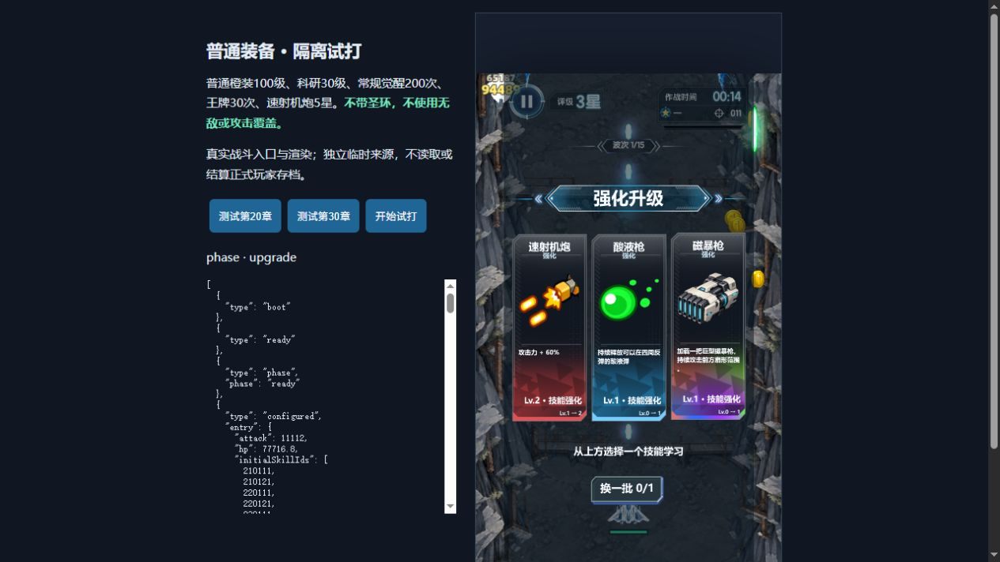

少女航线 · 当前本地版 · 2026-10-23 普通默认＋独立开发按钮
普通装备能通20～30章，圣环不是硬门槛
已找到不带圣环、不带飞机和人物额外收藏属性的完整通关配置。金币和图纸能通过现有流程取得并实际扣除，未发现必须先通下一章才能继续成长的互锁。
这不等于低配橙装就能过，也不等于玩家不会卡关。低科研、低天赋的普通橙装在24章以后明显吃力；33个主测试样本中有1次在第29章最终首领战失败。自动操作样本不能外推为玩家胜率，本报告也没有证明最低配置。
实际怎么验证
使用正式Simulation、战前配置计算器和Controls，按网页相同30Hz、Q16原始步长0x888跑完所有波次。正常伤害、碰撞和技能随机选项保留；不修改敌人、不覆盖攻击与生命、不使用广告或装备复活。选卡只在真实提供的选项中选择，自动操作每秒决策10次。
主验证配置之一五件固定普通系列橙装100级；所有已解锁科研30级；常规觉醒200次＋王牌觉醒30次；基础速射机炮5星。飞机、人物额外收藏为空，圣环数量为零。第30章入场攻击11,112，生命77,716.8。
第20章只有10项科研可用，第25章起为11项；测试按各章实际解锁记录准备。普通橙装＋1的120级方案也有第30章通关样本，但图纸成本更高。
上表只包含33个主样本；早期60Hz探索样本不纳入结论，重复运行的相同随机种子也没有重复计数。不同养成随机结果会改变属性与技能，主表固定一种合法抽取历史。
这套通关配置要花多少
金币约68%流向常规觉醒，29%流向科研，3%流向装备升级。装备颜色相同，科研和天赋投资不同，实际输出与生存能力会差很多。只看“全橙”容易把其他系统落后误判为缺圣环。
上述预算已通过真实交易逐步支付：200次常规觉醒、30次王牌觉醒、机炮升星、科研升级及技能激活、五部位升级。精确提供总预算后，各类金币、图纸、机炮卡与星核恰好扣完，并得到相同入场攻击、生命和技能列表；没有给同一笔金币重复安排用途。
卡在第30章时，资源还来不来
会继续产出。这里按连续通关1～29章、第30章尚未通关核算。20、25章也分别验证了相同链路：
- 8小时挂机领取和3次体力快速巡逻正常发金币、五种装备图纸、十一种科研图纸；快速巡逻合计消耗15体力。
- 登录＋完成3次有效出击可领取100活跃；可以重刷已经通过的低章节，不要求赢下卡住的章节。三次出击另需15体力，连同快巡共30体力；按16分钟恢复1体力，理论自然恢复90点/日。
- 每日机炮自选卡、每日成长星核仍可领取。通关30章之前每天星核按1枚计算；30章通关后才变为2枚，预算没有提前套用后续档位。
- 每15次常规觉醒产1枚星核；本方案200次产13枚，另外17枚可由每日成长补给取得，周补给和章节奖励还能补充。
- 装备箱券、免费箱、普通箱20次累计兑换高级券以及每周934普通紫装自选，不依赖拿到圣环。
这证明当前链路有回退刷取和持续成长出口。本轮没有发现新的资源领取或扣除断裂，未调整掉率、合成成本、装备/科研属性或敌人强度；新增5项交易回归，连同已有装备、领取、存档和普通模式用例共72项通过。完整跑局涉及41份运行数据文件，核对未在最终测试期间变动。
从零资源库存折算，要等多久
这是固定章节的静态收支，不是新号到达第30章的天数。按当前离线兼容收益，不计旧库存、首通、战斗掉落、任务材料、每周星核及巡逻天赋加成。当前原服服务端结算倍率仍未确认，不能把这些收益称为原版倍率。
8小时：每天一次8小时挂机；14小时：再做3次体力快巡，不看广告；18小时：再做2次模拟广告快巡。“小时”是收益等效时长，不是每天游玩时长。实际领取按离散余额结算，表内为长期均值。
在14小时收益方案下，从零库存凑齐这整套投资，静态最大项约28.1天金币、24.6天科研纸、22.6天装备纸，另需机炮卡7天、外部星核17枚。已有投入和其他奖励会缩短时间。各资源同时积累，不能把这些天数相加。装备本体的随机等待另见下表。
同名本体和合成会不会拖到更久
重新按主验证配置的五个固定系列部位计算，而非任意系列凑颜色。2000组随机样本，低品质只在同名内合成；圣环不当通用材料；每周934优先补同名。基础为五件目标蓝装、紫装零库存，不计旧积累、战斗、商城、一次性奖励或巡逻天赋。
发放模型又与200次实际生产开箱逐项核对，含品质保底及圣环计数；本表是材料与配方可行性模型，假设合理留料。不是最低通关门槛，也不是保证某账号在该天数抽齐。
第30章14小时方案中，五部位指定普通橙装的95%样本约16天，短于上述成熟方案的完整资源投资。红装不是已验证方案的必要前置；盲目等全红，会把这条本可走通的路线拖长。
升级决策上，真正容易踩的坑
- 装备品质与等级分开看：每类装备纸60→80级需19,500张，80→100级再需49,000张，合计68,500张。第20章14小时收益仅靠巡逻折算约49天，不能因为紫＋2材料能凑齐就假设100级也已具备。
- 两条已验证的第30章路线：普通橙100＋科研30＋常规200＋王牌30，金币约7,878.8万；普通橙＋1的120级＋科研25＋常规150＋王牌30，金币约3,826.8万，但每类装备纸需164,830张，仅巡逻折算约49.1天。前一条更吃金币和科研，后一条更吃装备图纸。
- 保留同名与圣环：上轮自动选材保护继续保留，手动消耗仍有警告。正确留料能避免把升阶等待人为拉长。
- 不能把自动样本当真人难度验收：普通低配可能失败，成熟方案也可能因走位和选卡失败。最低配置、真实玩家胜率、实际新号到达时间仍需后续真人样本验证。
网页核验与可复查证据
隔离网页使用现有正式战斗入口、配置握手、渲染与选卡流程；临时来源不接正式存档结算。截图验证初始化、地图、HUD与选卡正常，完整通关记录来自生产内核的逐帧跑局。

实际网页第30章画面；不是通关结算截图。
交易验证：
- exact joint spending reaches tested battle loadout：通过
- stalled20 patrol：通过
- stalled25 patrol：通过
- stalled30 patrol：通过
- daily loop needs completed sorties, no next-chapter victory：通过
下载完整核算JSON。项目内可重复运行资料保存于research/ordinary-clearance-20261023/；预算回归为tests/ordinary-chapter-budget.test.js。